Выявление лучших педагогических практик
Центры цифрового образования
О конкурсе
Цели конкурса
Создание эффективных условий, обеспечивающих непрерывное профессиональное развитие
Творческий карьерный рост педагогов дополнительного образования детей в едином образовательном пространстве Российской Федерации
Консолидация профессионального педагогического сообщества
Актуализация и развитие новых форм наставничества в сфере дополнительного образования детей
Задачи конкурса
01
Совершенствование профессионального мастерства педагогов дополнительного образования детей
02
Повышение общественного и профессионального статуса педагогов дополнительного образования детей
03
Отбор и продвижение новых педагогических практик и образовательных технологий в сфере дополнительного образования детей
04
Выявление лучших педагогических методик и технологий обучения и воспитания детей, разработанных и внедренных в образовательную деятельность педагогами дополнительного образования детей
Этапы проведения
Заочный этап
(июнь-июль 2023)
Прием заявок на конкурс:
до 17 июля 2023 года (включительно)
Работа конкурсной комиссии:
17 июля 2023 года — 07 августа 2023 года
Объявление полуфиналистов:
10 августа 2023 года
Очный этап
(сентябрь 2023)
Полуфинал:
05 сентября 2023 года — 07 сентября 2023 года (г. Челябинск)
Заключительный этап
(IV квартал 2023)
Финал
Награждения победителей:
Награждения победителей:
даты и место уточняются
Номинации конкурса
Лучший педагог Центров «IT-куб» в направлении
Программирование
Программирование роботов
Программирование на Python
Программирование на Java
Лучший педагог Центров «IT-куб» в направлении
Разработка приложений
Мобильная разработка
Разработка VR/AR-приложений
Лучший педагог Центров «IT-куб» в направлении
Системное администрирование
Лучший педагог Центров «IT-куб» в направлении
Кибергигиена и работа с большими данными
Лучший педагог Центров «IT-куб» в направлении
Алгоритмика и логика
Экспертное жюри конкурса
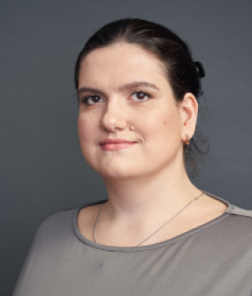
Горелова Анастасия Ивановна
Руководитель комитета по информатизации образования АРПП «Отечественный софт», руководитель программ обучения «Хаб Знаний МойОфис»
Председатель комиссииЗаика Софья Андреевна
Руководитель проектов Центра программной и проектной деятельности ФГАНУ «Федеральный институт цифровой трансформации в сфере образования»
Секретарь комиссии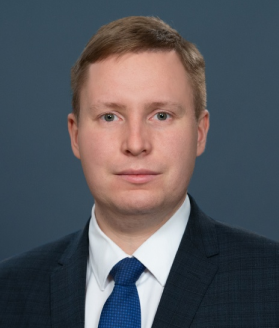
Лыжин Антон Игоревич
Заместитель директора Департамента государственной политики в сфере воспитания, дополнительного образования и детского отдыха Минпросвещения России
Эксперт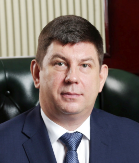
Смирнов Виктор Владимирович
Депутат Государственной Думы Российской Федерации
Эксперт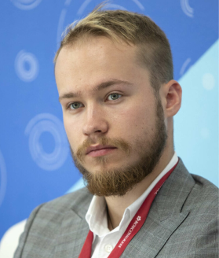
Вайно Александр Антонович
Руководитель центра молодежных инициатив «Агентства стратегических инициатив»
ЭкспертКнязева Елена Николаевна
Заместитель директора ФГБНУ «Институт стратегии развития образования»
Эксперт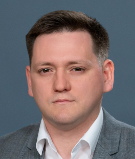
Востриков Александр Сергеевич
Заместитель генерального директора ФГАУ «Центр просветительских инициатив Министерства просвещения Российской Федерации»
ЭкспертКузнецова Ирина Андреевна
Заместитель директора по организационно–методическому сопровождению технической направленности ФГБОУ ДО «Федеральный центр дополнительного образования и организации отдыха и оздоровления детей»
Эксперт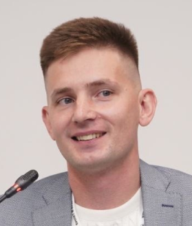
Воробьев Михаил Владимирович
Заместитель руководителя Департамента методического обеспечения в Общероссийском общественно–государственном движении детей и молодежи «Движение первых»
Эксперт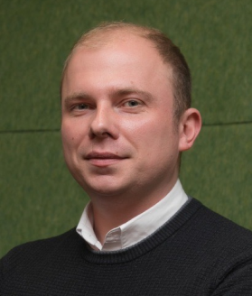
Растворов Дмитрий Александрович
Директор по взаимодействию с органами власти в сфере образования «Яндекс»
ЭкспертБлажко Рената Альбертовна
Менеджер по работе с научными и образовательными организациями «Киберпротект»; заместитель заведующего кафедрой ТиПИ, МФТИ
Эксперт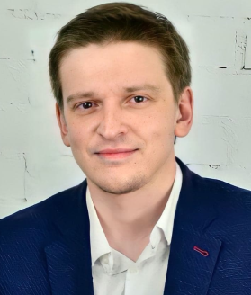
Пикулев Александр Евгеньевич
Руководитель образовательного направления «Varwin»
Эксперт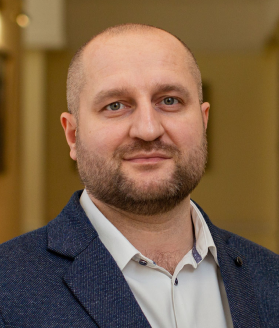
Савченко Виталий Владимирович
Проректор по цифровому развитию и информационным технологиям Государственного университета просвещения
ЭкспертНемыкина Юлия Сергеевна
Специалист отдела образования ООО «РЭД СОФТ»
Эксперт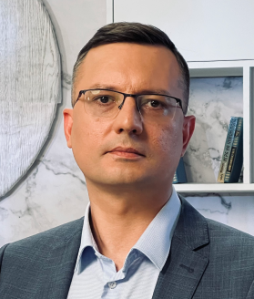
Боков Денис Юрьевич
Советник ФГАНУ «Федеральный институт цифровой трансформации в сфере образования»
ЭкспертКороль Анна Александровна
Руководитель проектов Центра программной и проектной деятельности ФГАНУ «Федеральный институт цифровой трансформации в сфере образования»
Эксперт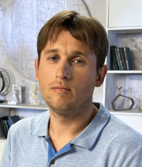
Мулько Олег Алексеевич
Ведущий программист Центра программной и проектной деятельности ФГАНУ «Федеральный институт цифровой трансформации в сфере образования»
Эксперт